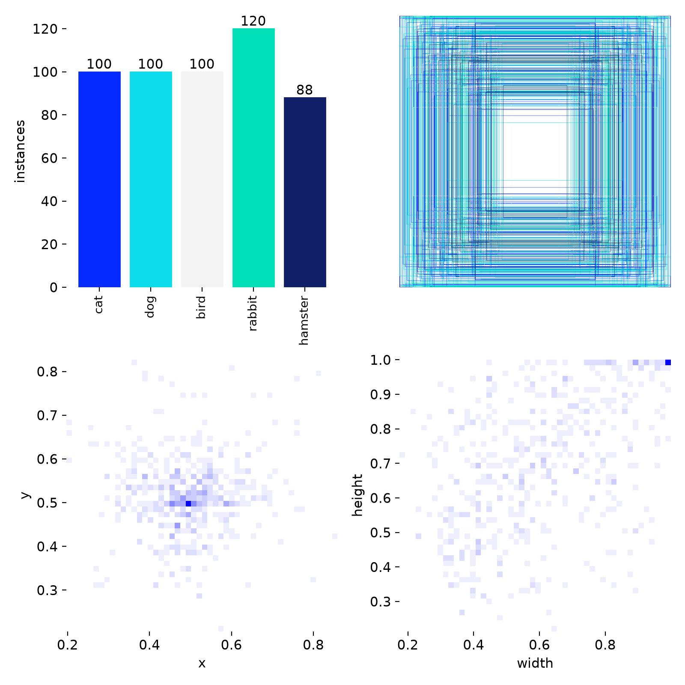
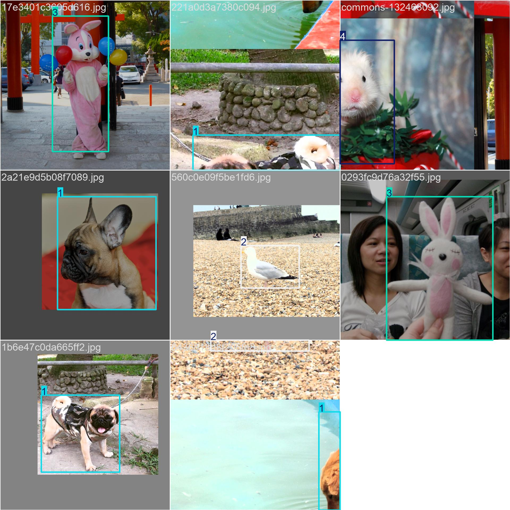

AI OBJECT DETECTION · 5 ชนิดสัตว์เลี้ยง
ห้องทดลองตรวจจับสัตว์ 5 ชนิด & เฝ้าระวังพื้นที่
ส่งรูปภาพ วิดีโอ หรือเปิดกล้องเพื่อให้ AI ตีกรอบหาตัวสัตว์ (แมว · สุนัข · นก · กระต่าย · แฮมสเตอร์) พร้อมจำลองขีดเขตพื้นที่ 5 มุมดูว่าน้องอยู่ ในเขต (IN) หรือ ออกนอกเขต (OUT)
กำลังตรวจสถานะโมเดล…
ลองกดดูตัวอย่างทันที:
📊 รายละเอียดทางวิชาการ: ชุดข้อมูล (Dataset) · Data Augmentation · และกราฟผลการ Train (คลิกเพื่อเปิดอ่าน)
📑 เปิดสไลด์สรุปโปรเจกต์ 23 หน้า (slides.html)
📓 ดาวน์โหลดไฟล์ Colab (train_pets5.ipynb)
📓 ไฟล์ Colab OpenImages
1. ชุดข้อมูลฝึกสอน (Dataset) & Label
- Dataset: รูปสัตว์ทั้ง 5 ชนิด แบ่ง Train 508 / Val 75 / Test 75 ภาพ ป้องกันภาพซ้ำข้ามชุด
- Bounding Box Label: ตีกรอบรอบตัวสัตว์พร้อมระบุคลาส 0–4

2. Data Augmentation & การ Train
- YOLO11n + DINOv2: ฝึก
YOLO11nที่640×640ร่วมกับDINOv2 - Augmentation: Mosaic, Flip, Color Jitter และ Scale

3. ความแม่นยำในการสแกน
- mAP50 = 90.56% (แมว 93.7%, สุนัข 91.8%, นก 90.4%, กระต่าย 84.8%, แฮมสเตอร์ 92.2%)
- Recall = 87.65% มองเห็นสัตว์และจำแนกคลาสแม่นยำ